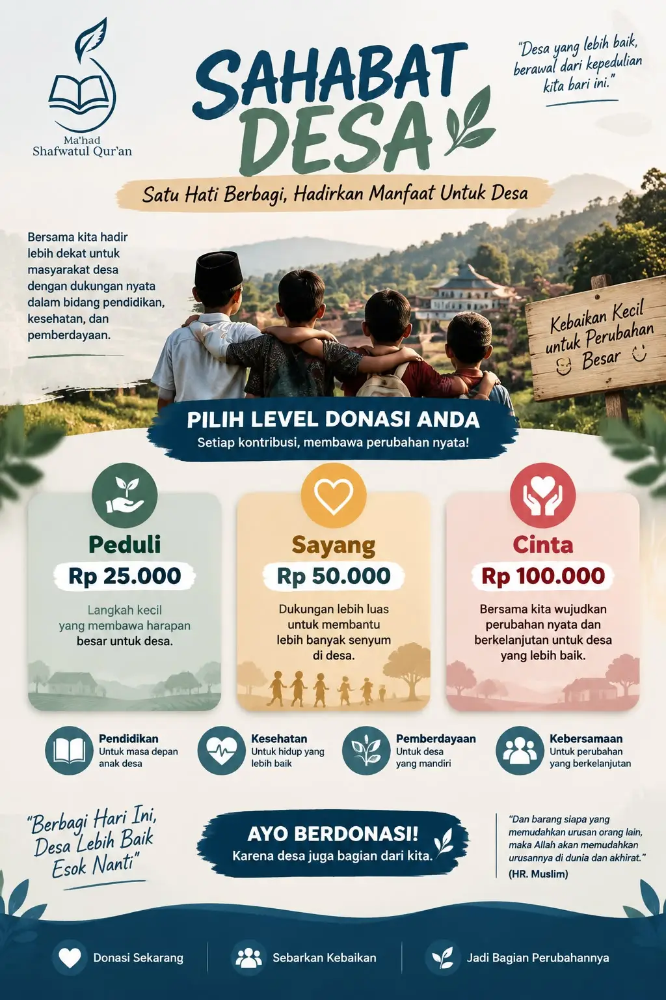

5 Cara Menumbuhkan Cinta Al-Qur'an pada Anak
Tips praktis bagi orang tua untuk membiasakan anak dekat dengan Al-Qur'an sejak dini.
Tanya lebih lanjut ke Admin →بِسْمِ اللَّهِ الرَّحْمَٰنِ الرَّحِيمِ
✦ Pesantren Tahfidz Qur'an Khusus Putri — Klaten
Menjaga Kalamullah, Meneladani Rasulullah, Meraih Ridha Allah.
Al-Qur'an bukan sekadar untuk dihafal, tetapi untuk dijaga dalam hati, dipahami, dan diamalkan. Sunnah Rasulullah ﷺ bukan sekadar untuk diketahui, tetapi untuk diikuti dalam setiap langkah kehidupan. Karena itu, Ma'had Shafwatul Qur'an hadir untuk membina generasi yang istiqamah di atas Al-Qur'an dan As-Sunnah sesuai pemahaman salaful ummah, dengan satu tujuan mulia: meraih ridha Allah ﷻ.
Unduh Brosur PPDB✦ Profil Ma'had
Ma'had Shafwatul Qur'an adalah pesantren tahfidz khusus putri di Klaten, membuka Penerimaan Santriwati Baru angkatan kedua untuk jenjang SMP, Tahun Ajaran 2026/2027.
Melahirkan penghafal Al-Qur'an yang istiqamah dalam ibadah serta menata seluruh aspek kehidupannya berlandaskan Al-Qur'an dan As-Sunnah.
✦ Kisah di Balik Ma'had
Ma'had Shafwatul Qur'an lahir dari sebuah harapan: menghadirkan lingkungan tarbiyah yang kondusif bagi para muslimah untuk tumbuh di bawah naungan Al-Qur'an dan As-Sunnah. Sebuah tempat di mana setiap santriwati dibimbing menjaga hafalan Al-Qur'an, memperbaiki akidah, memperindah akhlak, membiasakan ibadah, serta menata seluruh aspek kehidupannya sesuai petunjuk Allah ﷻ dan tuntunan Rasulullah ﷺ.
Kami meyakini bahwa membentuk generasi Qur'ani tidak cukup dengan hafalan semata. Ia memerlukan ilmu yang benar, tarbiyah yang berkesinambungan, keteladanan, kesabaran, dan doa. Karena itu, setiap proses pendidikan di Ma'had diarahkan untuk membentuk muslimah yang berpegang teguh kepada Al-Qur'an dan As-Sunnah sesuai pemahaman salafus shalih; istiqamah dalam ketaatan, mulia akhlaknya, dan ikhlas dalam setiap amal demi mengharap ridha Allah ﷻ.
Inilah ikhtiar yang kami persembahkan. Semoga Allah ﷻ menjadikannya sebab lahirnya generasi yang menjaga Kalamullah, meneladani Rasulullah ﷺ, dan meraih ridha-Nya.
✦ Program Pendidikan
Kurikulum menyeimbangkan program akademik, tahfizh, dan pengembangan diri khusus santriwati.
Tahsin & tahfizh 30 juz dengan metode talaqqi dan muraja'ah harian bersama pembimbing.
Pelajari selengkapnya →Aqidah, tafsir, hadits, dan mutun 'ilmiyyah — disampaikan bertahap sesuai pemahaman salafussholeh.
Pelajari selengkapnya →Pembiasaan harian plus Arabic Day agar santriwati terbiasa memahami bahasa Al-Qur'an.
Pelajari selengkapnya →Tata boga, kelas menulis, kaligrafi, kajian keputrian, dan renang di tempat khusus akhwat.
Pelajari selengkapnya →✦ Kenapa Memilih Kami
Target hafalan dan evaluasi jelas setiap bulan, orang tua dapat memantau perkembangan santriwati.
Asatidzah lulusan pesantren terpercaya dan alumni luar negeri. Mengasuh dan mendampingi santriwati setiap waktu.
Asrama khusus akhwat, pengawasan penuh oleh musyrifah, dan pembiasaan adab sehari-hari.
✦ Kegiatan Harian
Jadwal dapat menyesuaikan kalender akademik & agenda tahunan ma'had.
✦ Galeri
Sekilas suasana, lingkungan, dan fasilitas belajar di Ma'had Shafwatul Qur'an.
✦ Angkatan Kedua
Sebagai angkatan kedua, putri Anda akan mendapat perhatian dan pendampingan yang lebih personal dari pembina — bukan sekadar menjadi bagian dari sistem yang sudah besar.
Rasio santriwati dan pembina masih kecil di angkatan kedua, sehingga perkembangan tiap anak lebih terpantau.
Gedung dan sarana belajar baru, dirancang khusus untuk kenyamanan santriwati sejak awal berdiri.
Menjadi bagian dari angkatan awal adalah kesempatan yang tidak terulang — putri Anda akan dikenang sebagai perintis.
Ikuti @shafwatulquran untuk lihat kegiatan santriwati sehari-hari.
Kunjungi Instagram resmi kami untuk melihat kegiatan terbaru ma'had.
Buka @shafwatulquran✦ Artikel & Kabar
Tips praktis bagi orang tua untuk membiasakan anak dekat dengan Al-Qur'an sejak dini.
Tanya lebih lanjut ke Admin →Wajar kalau ada rasa cemas melepas putri untuk pertama kali tinggal di asrama. Kenali cara mempersiapkan mental anak dan diri Anda sendiri, mulai dari komunikasi rutin hingga membangun kepercayaan pada pembina.
Tanya lebih lanjut ke Admin →Mengenal keutamaan dan keberkahan menjadi penghafal Al-Qur'an sejak kecil.
Tanya lebih lanjut ke Admin →✦ Belum Yakin?
Belum siap isi form lengkap? Tinggalkan nama & nomor WA Anda — kami akan menghubungi untuk info lebih lanjut, tanpa mengikat apapun.
✦ Pendaftaran Santriwati Baru
Isi form di bawah ini. Admin kami akan menghubungi Anda melalui WhatsApp untuk proses selanjutnya.
INFORMASI PPDB 2027–2028
Lihat poster resmi dalam ukuran penuh, unduh untuk disimpan, atau bagikan kepada keluarga dan kerabat.
✦ Donasi
Sebagai ma'had baru, kami masih menyiapkan fasilitas dan membuka kesempatan beasiswa bagi santriwati dhuafa. Infaq Anda — sekecil apapun — jadi bagian nyata dari perjalanan angkatan kedua ini.
Memuat progres donasi...
Salurkan infaq/donasi melalui rekening resmi ma'had. Hubungi admin via WhatsApp untuk mendapatkan nomor rekening terbaru.
Donasi cepat via e-wallet atau mobile banking cukup dengan scan QRIS. Hubungi admin untuk mendapatkan kode QRIS.
✦ Program Tambahan
Selain mendukung pembangunan ma'had, Anda juga bisa menjadi Sahabat Desa — berdonasi untuk program pendidikan, kesehatan, pemberdayaan, dan kebersamaan bagi masyarakat desa di sekitar ma'had.

Klik poster untuk melihat ukuran penuh.
✦ Tanya Jawab
Silakan hubungi admin via WhatsApp untuk info rincian biaya terbaru, karena dapat berubah tiap tahun ajaran.
Boleh, ma'had menyediakan jadwal kunjungan rutin. Jadwal lengkap dapat ditanyakan ke admin.
Pendaftaran saat ini dibuka khusus untuk calon santriwati jenjang SMP yang telah lulus SD atau sederajat.
Wali santriwati akan mendapat laporan perkembangan hafalan & akademik secara berkala dari pembina, melalui aplikasi khusus yang sudah disediakan Ma'had.
Tersedia bagi yang terpilih melalui seleksi.
✦ Kontak & Lokasi
Sekaran, Wonosari, Klaten, Jawa Tengah
Senin – Sabtu, 08.00 – 16.00 WIB
Bantu informasi Ma'had Shafwatul Qur'an menjangkau keluarga lainnya.